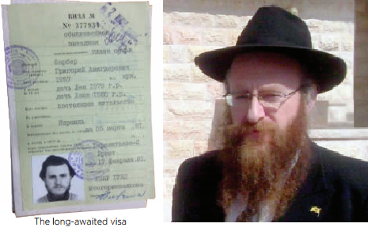

“The Demonstrations at the Absorption Hostel Was Our Welcome"
R ’ Hirsh Farber, shliach in Gilo in Yerushalayim, had to wait months for a visa and then the long hoped for day was on a Shabbos. He decided to forgo it and start again from the beginning .
By Zalman Tzorfati

As I grew up, I realized that my father did not believe in communism. Of course, he did not oppose it or openly say anything against it, but in his attitude to the government, I could see that communism was not the embodiment of truth and goodness in the world
I finished high school with excellent marks in math and went to a school of higher learning for mathematics in Moscow. At that point, I began thinking more about what it means to be Jewish. Among the students, we knew who was Jewish and sometimes we talked about it. I had friends who identified as “half-Jewish,” meaning that only one parent of theirs was Jewish. We did not know at that point that one’s Jewishness is established by the mother and so we thought that children of intermarriage were “half-Jews.”
I thought about how intermarriage slowly leads to the eradication of the Jewish people. I felt responsible to continue the chain of generations and decided I would only marry a Jew.
While in school, I met the woman who would become my wife. She was from a home that, relative to ours, was more traditional. Her grandfathers put on t’fillin and even kept some other mitzvos. My father-in-law, on the other hand, was a respected professor and sworn communist. At that point, we both started researching our roots together with another group of Jewish students. We met now and then for social gatherings that ignited in us the feeling of belonging to the Jewish nation and to Judaism.
Through a mutual friend, I found out about a young couple who had Torah classes in their home. The meetings were secret, of course, and only a few people attended them who were invited by word of mouth. This was the first time that I began learning about Judaism in a serious way. We studied Jewish thought and Hebrew. Then we decided to visit the Marina Roscha shul and do mitzvos.
We married according to Jewish law. The ones who arranged our chuppa were Chabad Chassidim in Moscow, including R’ Getcha Vilensky and R’ Mottel Lifschitz who was the only shochet and mohel in Russia.
At the time, we did not actually know what Chabad is or the differences between Chabad and other streams of Judaism. In Moscow at that time, all of the Jewish services such as kosher sh’chita, brissin and chuppos were arranged by Chabad Chassidim. On the other hand, the activities with the students and secret classes that we took part in were all organized by aliya activists, who were students our age or slightly older, who taught Ivrit and encouraged the young people to make aliya to Eretz Yisroel.
One of the more famous members of their ranks was Yuli Edelstein, the Speaker of the Knesset. We met back then on a few occasions in the homes of friends and at secret gatherings. A few years back, I invited him to be the guest of honor at the dinner that we held for the mosdos of Chabad of Gilo. We had a long nostalgic conversation, recalling many memories of places and shared friends from back in the day.
Once we became official members of the aliya activists, the next natural step was to apply for permission to leave the USSR. However, prior to making that move, I had to convince my father, since we could not leave without his approval. That was not so simple, as there was a certain amount of danger involved for my father. It took almost an entire year before my father agreed to sign that he agreed.
The next step was to quit my job. I had a responsible and respectable job in a government company, in a position that was considered “classified.” Needless to say, what was considered a dream for any citizen was a problem for me since this job was a great reason for the government to turn down my request with the excuse that I was in possession of classified information.
Aside from giving up my job, we also had to obtain a huge sum of money to pay for the visa. The amount, equal to nearly a year’s salary of a senior engineer, was considered payback for the higher education we got at the government’s expense.
We submitted all the forms and waited for a response. During that time I worked in sales and odd jobs that came up, and made sure that no job was senior enough to give them a reason to turn me down. At the same time, we continued learning and getting more involved in Torah and mitzvos.
After nearly a year of anxious waiting and anticipation, one morning we got a notice that our request had been accepted and we had to make an appointment at the emigration office in order to sign and get the papers. Despite the long wait, our experience was considered easy because I wasn’t known to the authorities. Those who were exposed as students of Judaism and worse, as teachers of Hebrew or Judaism, were refused on principle and had to wait for years, sometimes.
We were thrilled but knew that until our feet trod on the earth of Eretz Yisroel, nothing was assured.
A new waiting period began. We got a number for an appointment at the emigration office. The waiting period on the line was usually a few weeks. Every day, I had to go to the emigration office and sign that I did not forgo my visa and was still waiting my turn.
After a few weeks, I was informed that it was my turn and it was arranged for the upcoming Shabbos. At that time, I had become closer with the Lubavitcher Chassidim and I considered myself a Chassid. Therefore, I resolved that no matter what, I would not go and sign on Shabbos in order to get the forms. At the emigration office they realized I had not come because of Shabbos and they sent me to the back of the line. I had to wait again.
THE DISCOVERY THAT BROUGHT ME TO CHABAD
During that period, I became a Chabad Chassid. How did this happen? A group of us Jewish students once went to a vacation village. There was a bachur there named Eliyahu Essas who was very active among the Jewish students. He was mainly connected with the knitted kippot folk and a little with the Litvishe.
One night, he gave a shiur and mentioned that he and his friends went by bus and train on Shabbos to the shul on Archipova Street, in order to talk with Jews there about Judaism and aliya. He explained how he tied his transit card around his neck and he did not go through electronic doors and other electronic things, so as to avoid desecrating Shabbos.
When he noticed the raised eyebrows among some of the young folks, he gave an explanation for what he did. He quoted “there is no tzaddik on earth who does good and does not sin,” and practically speaking, there is nobody in the world who can observe the entire Torah and not sin, and therefore, it was better to commit a minor sin in order to draw other Jews close to Torah and mitzvos.
I left the shiur with a bad feeling. I had greatly admired him but then I thought, it was not possible that G-d had given the Torah without it being possible for man to observe it; and if there was no such thing as a person who did not sin, then the Torah was not absolute truth, G-d forbid.
I shared these thoughts with a friend who said, “Chassidus explains, and in Tanya it says, that this ‘sin’ refers to a deficiency compared to the level above it. And there is a tzaddik who has no sin at all; he is the Lubavitcher Rebbe.” This was the first time I was hearing about Chassidus, about Tanya, and about the Rebbe. I asked him where I could study this approach of Chassidus and he referred me to an underground Tanya class.
That is how I became acquainted with Chabad Chassidus and the Rebbe. I started learning Chassidus, attending secret farbrengens with R’ Getcha and R’ Mottel and felt that my soul was drawn there. Within a very short time, I identified as a Chabad Chassid.
After more than three months of waiting on the daily line at the emigration office, the moment arrived. We went in, my wife and I, and they asked us a few questions, at the end of which we signed and received our visas.
Since I already identified as a Lubavitcher Chassid, my enthusiasm about going to Eretz Yisroel took on a different dimension. There were Chassidim who had started talking to us about our shlichus in Moscow. We asked a rav and he said that since we had already gotten our visas, when so many other people wished for them, there was no doubt that we had to make aliya.
The Chassid Rabbi Berel Levy came to Moscow. We gathered for a secret farbrengen with him in the course of which he took out a video camera and made videos of all of us for the Rebbe. Each one spoke to the camera and asked the Rebbe for a bracha. I spoke about making aliya and asked for a bracha for success.
ARRIVING IN ERETZ YISROEL
Not long after, my wife and I and our two daughters and two suitcases were on the ramp of the plane; our destination was Vienna as a stopover. We were a large group of over 100 people, all moving to Eretz Yisroel.
In Vienna, we were met by Rabbi Krogliak who was temporarily replacing one of the shluchim there. I was already considered one of Anash and he received word about my arrival and came to welcome me. We hugged like old friends even though we did not know one another. Chassidim are like that …
We stayed in Vienna for one night under heavy security and in the morning we boarded a flight for Eretz Yisroel. Within a few hours, we walked on the ground of the holy land for the first time. It was a very special feeling. It was a dream come true.
That day was 16 Sivan 5741/1981.
Rabbi Betzalel Schiff of the Shamir organization was waiting for us at Ben Gurion airport. He brought us to the absorption center in Kfar Chabad where they had set up a place for us. But there was a demonstration there that night by immigrants who blocked the entrance and did not allow us to enter. That was also a sort of welcome…
R’ Tzalke immediately offered to host us. We ended up spending three weeks in his living room in Yerushalayim as he tried to arrange a place for us in Yerushalayim.
After three weeks, he said he had arranged a place for us at an absorption center and we could choose between Mevaseret Tzion and Gilo. There were already several Russian immigrant families in Mevaseret who were doing some outreach work in the area. There was nobody in Gilo. Since we wanted to combine studying with shlichus, we chose Gilo. We met two Lubavitcher families there who had recently come from France. Despite the difference in style and background, we immediately connected. We started a Chassidus class, set up an active t’fillin stand and went on mivtzaim together.
After a year of our joint efforts in outreach work, during which time more families came to the absorption center in Gilo, mainly from France and the Soviet Union, we decided to establish a Chabad minyan in the neighborhood. On 12 Tammuz 5742, thirty six years ago, we gathered in the storage unit of one of the fellows for the first Chabad minyan in the history of Chabad in Gilo.
The shul became the nucleus for the Chabad community and the beautiful Chabad mosdos that exist today in Gilo.
Beis Moshiach (staff). "“The Demonstrations at the Absorption Hostel Was Our Welcome"." Beis Moshiach, no. 1123 (June 20, 2018).